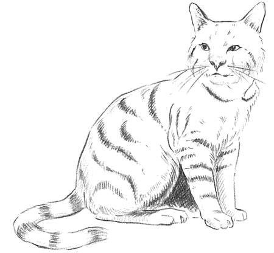

Usefulness of cats
Cats may wake us up at 4 a.m. and barf at an alarming frequency, yet anywhere between 10 to 30 percent of us call ourselves “cat people”—not dog people, not even equal-opportunity cat and dog lovers. So why do we choose to bring these fluffballs into our homes—and spend over $1,000 per year on one who isn’t genetically related to us and frankly seems ungrateful most of the time?
The answer is obvious to me—and probably to all cat lovers out there, who need no scientific research to justify their fierce love. But scientists have studied it anyway and found that, while our feline friends may not be good for our furniture, they might make some contribution to our physical and mental health.
The cat with eyne of burning coal. Now crouches from (before) the mouse's hole.
According to one Australian study, cat owners do have better psychological health than people without pets. On questionnaires, they claim to feel more happy, more confident, and less nervous, and to sleep, focus, and face problems in their lives better.